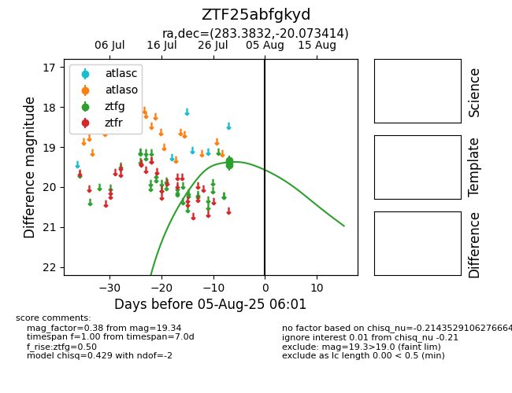

Target ZTF25abfgkyd at 2025-08-06 17:27, see:
FINK: fink-portal.org/ZTF25abfgkyd
Lasair: lasair-ztf.lsst.ac.uk/objects/ZTF25abfgkyd
ALeRCE: alerce.online/object/ZTF25abfgkyd
alt names
ZTF25abfgkyd (ztf,fink)
coordinates:
equatorial (ra, dec) = (283.3832,-20.07341)
galactic (l, b) = (15.1318,-9.44759)
photometry
last ztfg=19.34
3 ztfg detections
